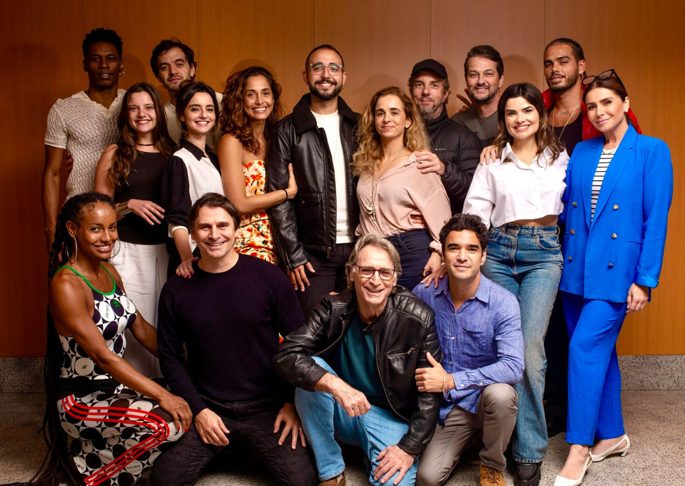

Criada e escrita por Raphael Montes, segunda temporada de Beleza Fatal é confirmada pela HBO Max

Autor retorna como criador e roteirista da nova fase da novela, agora também à frente da produção criativa por meio da Casa Montes
A HBO Max anunciou oficialmente o desenvolvimento da segunda temporada de Beleza Fatal, novela criada e escrita por Raphael Montes, consolidando o sucesso da primeira produção original do gênero no streaming. Encerrada em março deste ano, a primeira temporada alcançou resultados expressivos: esteve entre os conteúdos mais assistidos da plataforma e liderou indicadores de alcance, aquisições e horas consumidas em toda a América Latina durante sua semana final de exibição.
Além de retornar como criador e autor dos novos capítulos, Raphael Montes amplia sua atuação no projeto por meio de sua produtora, a Casa Montes, que passa a responder pela produção criativa de desenvolvimento da nova temporada, em parceria com a Coração da Selva, produtora responsável pela realização da novela.
Um fenômeno de público que ganha continuidade
“Beleza Fatal nasceu da vontade de criar uma novela forte, atual e divertida, com ritmo intenso e muitas viradas — que são minha assinatura”, relembra Raphael Montes. “Para minha alegria, o público se apaixonou por essa história e a transformou em um fenômeno: lolovers e capirotes se espalharam pelo Brasil; no carnaval, pessoas se fantasiaram de Lola e Doutor Peitão.”
O sucesso imediato levou a HBO Max a encomendar uma nova temporada. Segundo o autor, o retorno ao universo da novela exigiu tempo e maturação criativa. “Precisei de tempo para buscar uma história que realmente me fizesse vibrar. Quando tive a ideia, apresentei a trama à plataforma e já estou criando e escrevendo os capítulos. Estou muito feliz de voltar a esse universo botocado e tenho certeza de que o público vai se surpreender com a continuação dessa história”, celebra.
A nova fase mantém a estrutura criativa que marcou a primeira temporada: trama criada e escrita por Raphael Montes, com supervisão de Silvio de Abreu e direção de Maria de Médicis.
Casa Montes amplia presença no audiovisual
A segunda temporada de Beleza Fatal marca também um novo momento na carreira do autor carioca. Por meio da Casa Montes, produtora fundada em 2020, Raphael passa a atuar diretamente na produção criativa do projeto.
“Voltar para a criação da nova temporada e ter participação na produção criativa é um passo importante não só para a minha carreira, mas também para a minha produtora de desenvolvimento. A Casa Montes será responsável pelos trabalhos com o ‘selo Raphael Montes’ que virão pela frente”, afirma o autor.
Da ideia à novela original do streaming
A vontade de escrever uma novela acompanha Raphael Montes há muitos anos. Aos 25, ele ingressou na TV Globo como roteirista de séries, quando conheceu Mônica Albuquerque, então executiva de talentos. Anos depois, já na Warner Bros. Discovery e à frente do núcleo de novelas da América Latina, Mônica entrou em contato com o autor para conhecer suas propostas — movimento que resultou no nascimento de Beleza Fatal.
No dia 15 de dezembro, a HBO Max lançou o Especial Beleza Fatal, que revisita os bastidores da primeira temporada e celebra momentos icônicos da novela, reafirmando a consolidação de uma nova fase das produções seriadas brasileiras no streaming.
Sobre esse novo cenário, Raphael Montes comenta: “Espero que a possibilidade de criar para diversas plataformas continue abrindo portas para outras novelas e alcance um público ainda maior.”
Sobre Raphael Montes
Nascido no Rio de Janeiro, em 1990, Raphael Montes é escritor, roteirista e produtor-executivo. É criador, roteirista-chefe e produtor-executivo de Beleza Fatal, primeira novela da Warner Bros. Discovery, e da série Bom Dia, Verônica (Netflix), vencedora do Prêmio APCA 2020.
Na literatura, é autor de romances de grande sucesso como Suicidas, Dias Perfeitos, O Vilarejo, Jantar Secreto, Uma Mulher no Escuro (vencedor do Prêmio Jabuti 2020), A Mágica Mortal e Uma Família Feliz. Suas obras foram traduzidas para mais de 25 países, com direitos de adaptação vendidos para o cinema e a televisão.
No audiovisual, assina roteiros como Uma Família Feliz, a franquia A Menina Que Matou os Pais (Amazon Prime Video) e Praça Paris. Em 2020, fundou a Casa Montes, produtora de desenvolvimento focada em projetos de crime, terror e suspense, consolidando sua atuação como uma das principais vozes criativas do audiovisual brasileiro contemporâneo.